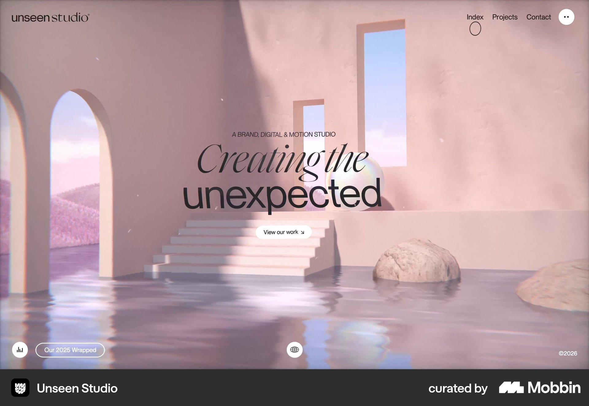

Mobbin · example 1
Unseen Studio
Observed
Centered headline, short agency descriptor and visible work button over an immersive scene.
For Moriz
Separate the expressive headline, concrete UX/UI and development explanation, and one project-viewing action.
Tradeoff / fit
The scene is visually dominant. Atmosphere alone does not communicate what Moriz delivers.
Mobbin section image visually inspected; capture date unavailable.